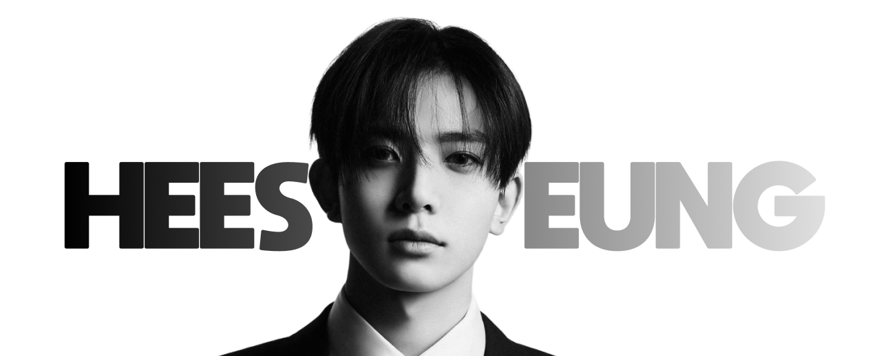

오랜 연습생 기간 동안 완벽에 가까운 실력을 갈고닦으며 '천재 연습생'으로 이름을 알린 희승은, 엔하이픈의 명실상부한 음악적 중심이자 무대 위 핵심 플레이어이다. 팀 내 메인보컬로서 감미로운 미성부터 파워풀한 진성까지 넓은 스펙트럼을 자유자재로 오가며, 곡의 분위기를 결정짓는 독보적인 음색을 자랑한다. 그의 보컬은 정교한 퍼포먼스 속에서도 흔들리지 않는 안정감을 자랑하며, 무대를 장악하는 압도적인 표현력과 결합해 매 순간 몰입감을 선사한다. 타고난 음악적 재능에 안주하지 않고 작사, 작곡, 프로듀싱까지 끊임없이 영역을 확장해 나가는 그는, 엔하이픈의 음악적 깊이와 예술적 가치를 한 단계 끌어올리는 대체 불가능한 아티스트이다.
팀의 맏형으로서 희승이 보여주는 존재감은 권위적이지 않은 다정함과 묵묵한 신뢰에서 비롯된다. 리더인 정원을 뒤에서 든든하게 받쳐주며, 멤버들이 지치거나 흔들릴 때 따뜻한 조언과 위로로 팀의 정서적 버팀목이 되어준다. 겉으로는 장난기 많고 엉뚱한 반전 매력으로 팀의 분위기를 편안하게 이끌지만, 음악과 무대를 마주할 때만큼은 누구보다 진지하고 날카로운 프로페셔널리즘을 발휘한다. 이처럼 부드러운 인간미와 범접할 수 없는 음악적 카리스마를 동시에 지닌 희승은, 멤버들에게는 닮고 싶은 완벽한 멘토이자 팬들에게는 무한한 자부심을 심어주는 엔하이픈의 가장 찬란한 이정표이다.
이희승 Lee Heeseung
2001년 10월 15일 출생
메인보컬
대한민국, 경기도
181 cm
A형
INFP
보컬 및 프로듀싱
게임, 농구, 작곡 및 음악감상
희둥이, 밤비, 만능센터, 맏내
라면, 치킨, 고기
다정한 맏형